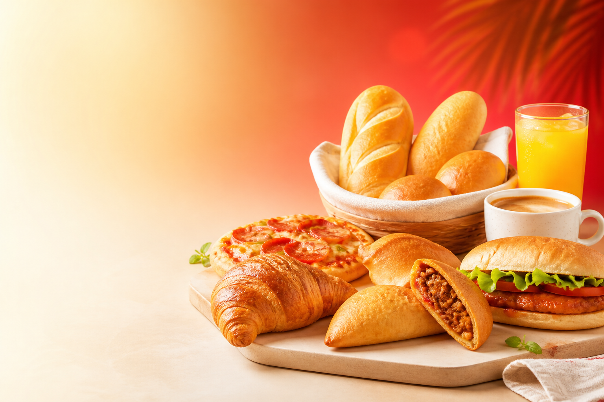

Commande validee avant paiement
3 succursales
Route Freres, Petion-Ville, Delmas
Paiements locaux
MonCash, NatCash, virement bancaire
Le gout du point chaud, commande sans stress et recuperation securisee.
Pain chaud, pates, pizza, fritures et boissons. Le client commande en ligne, le manager valide, le paiement est confirme, puis la recuperation se fait rapidement avec QR code ou livraison.
Produits frais tous les jours
Paiement apres validation
Retrait ou livraison selon la commande
Fraicheur • Rapidite • Confiance
Tout est pret pour commander plus vite.

Best sellers
Pate poulet • Pain chaud • Pizza fromage
Recuperation rapide
QR code securise apres confirmation du paiement
Les envies les plus commandees
Des incontournables qui donnent tout de suite faim et qui parlent a tes clients.
Pain chaud
Croustillant, simple, incontournable et toujours pret pour accompagner le quotidien.
Pate poulet
Le classique qui fait revenir les clients encore et encore, surtout aux heures de pointe.
Pizza fromage
Une option chaude, genereuse et rapide a servir pour les commandes partagees.
Jus orange
La boisson qui complete facilement un achat rapide et augmente le panier moyen.
Comment ca marche
Un flux adapte a la realite locale avec validation humaine et preuve de paiement.
1. Le client commande
Choix des produits, du lieu de retrait et de l'horaire.
2. Le manager valide
Chaque commande est acceptee ou refusee avant le paiement.
3. Le client paie
MonCash, NatCash ou virement avec preuve obligatoire.
4. QR code securise
Le retrait est confirme par scan apres validation du paiement.
Succursales & horaires
Route Freres
Retrait rapide et commandes de quartier
7h00 - 20h00
Petion-Ville
Flux soutenu aux heures de pause et du soir
7h00 - 21h00
Delmas
Validation locale par manager de succursale
7h00 - 20h30
Pourquoi les clients peuvent avoir confiance
Validation humaine
Chaque commande est verifiee avant paiement pour eviter les malentendus.
Paiement apres accord
Le client ne paie qu'une fois la commande confirmee par le manager.
Recuperation ou livraison suivie
QR code pour le retrait, suivi clair pour la livraison et notifications utiles.
Pret a commander ?
Choisis tes produits, laisse le manager valider, puis recupere sans confusion.
Une experience moderne pour le client, plus organisee pour le point chaud, et plus rassurante pour le paiement et la recuperation.